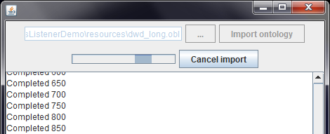

|

|
|
Progress Listener |
|
|
|
|
Progress Listener |
Selected methods with potentially lengthy execution take an optional argument of type ProgressListener. ProgressListener specifies an interface, through which these long running operations can provide feedback to the client code.

Operation execution is split into phases, whose beginning and end are reported; besides, operation progress is reported in units of work. This allows the developer to provide feedback to the user in case of interactive applications, or to log or otherwise record progress and results of a long-running operation.
ProgressListenerDemo
The Demo project is a simple interactive application that imports the selected ontology file into OntoBroker. Importing the 2MB ontology file bundled with the project makes the lag already apparent.
Worker Thread
In order to keep the GUI responsive so that we can display operation progress and let the user cancel the running operation, the long running operation must execute in another thread (different from the GUI thread). The demo application uses the convenient SwingWorker class to do this.
new SwingWorker<Void, Void>() {
protected Void doInBackground() throws Exception {
try {
loader.importExistingOntology(f, listener);
} catch (Exception ignore) {}
return null;
}
}.execute();
Implementing the ProgressListener Interface
For reasons of simplicity, the class representing the main application frame directly implements the ProgressListener interface. The methods simply display text messages about operation progress in a text area. Additionally, method calls indicating operation termination change the form state to indicate the import operation is no longer executing.
public void workUnitCompleted(int workUnitsCompleted, int totalWorkUnits) {
outputText("Completed " + workUnitsCompleted);
}
public void operationCompleted() {
outputText("op completed");
setGuiState(false);
}
When implementing the interface methods, consider that they will be called from another thread. Therefore, any calls from within these methods must be thread-safe or guaranteed to execute on the right thread.
This code snippet shows how the demo application makes sure it is only modifying state of GUI components from within the GUI thread.
private void setGuiState(final boolean isImporting) {
if (SwingUtilities.isEventDispatchThread()) {
...
buttonCancel.setVisible(isImporting);
} else {
SwingUtilities.invokeLater(new Runnable() {
public void run() {
setGuiState(isImporting);
}});}}